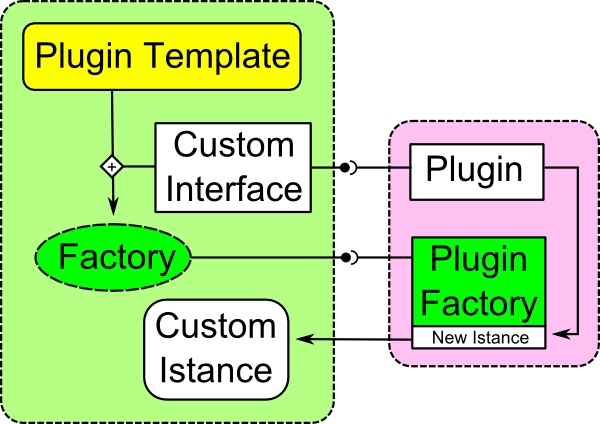
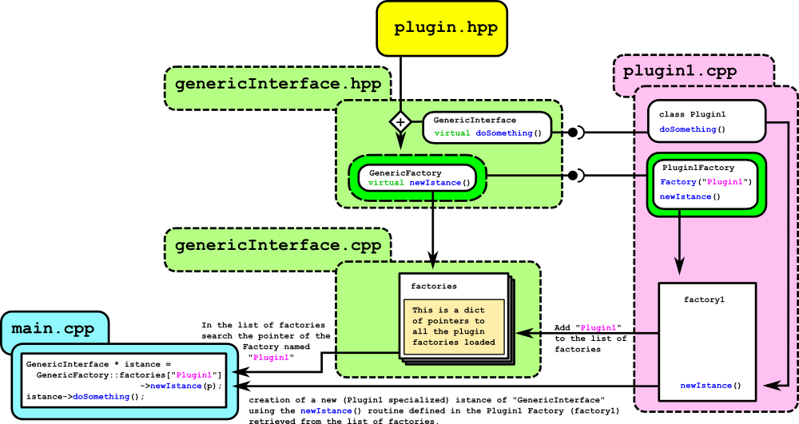

List of available plugins
For complete list of available plugins and their configuration see Plugin List
Overview
The plugin interface "OpenAB_Plugin" is used to implement a Plugin Based mechanism useful to keep an abstraction layer between the core and the plugins implemented.
It allow the main program to define a generic interface implemented by all the plugins that may or not be loaded runtime.
Implementation Detail
The Plugin Template (plugin.hpp) is basically a template library helper that must be used to create any kind of generic plugin.
Once defined a custom cpp interface and the required parameters used by this custom interface (as typedef or struct or class or another plugin or ...), the plugin template must be used to define a Factory Interface implemented in any plugin and used to create a new Plugin Specific Interface.

Custom Interface and Parameters example
class CustomInterface
{
public:
CustomInterface(){};
virtual int getValue() = 0;
};
struct CustomParameters {
int initialValue;
int maxValue;
};
Definition of the Custom Factory Interface
Detailed Example
Overview

Step 1: Definition of a generic interface.
File (genericInterface.hpp)
#include <plugin/plugin.hpp>
#include <string>
class GenericInterface
{
public:
GenericInterface(){};
virtual void doSomething() = 0;
virtual void doSomethingElse() = 0;
};
typedef std::string GenericParams;
File (genericInterface.cpp)
#include "genericInterface.hpp"
Step 2: Plugin implementation.
Definition of all the Plugins that implement the required interface;
File (plugin1.cpp)
#include <iostream>
#include "genericInterface.hpp"
class Plugin1 : public GenericInterface
{
public:
void doSomething()
{
std::cout << "I'm doing something on Plugin1" << std::endl;
}
void doSomethingElse()
{
std::cout << "I'm doing something else on Plugin1" << std::endl;
}
};
class Plugin1Factory : GenericFactory
{
public:
Plugin1Factory() : GenericFactory::Factory("Plugin1"){};
~Plugin1Factory(){}
GenericInterface * newIstance(const GenericParams & params)
{
return new Plugin1();
};
};
File (plugin2.cpp)
#include <iostream>
#include "genericInterface.hpp"
class Plugin2 : public GenericInterface
{
public:
void doSomething()
{
std::cout << "I'm doing something on Plugin2" << std::endl;
}
void doSomethingElse()
{
std::cout << "I'm doing something else on Plugin2" << std::endl;
}
};
class Plugin2Factory : GenericFactory
{
public:
Plugin2Factory() : GenericFactory::Factory("Plugin2") {};
~Plugin2Factory(){}
GenericInterface * newIstance(const GenericParams & params)
{
return new Plugin2();
};
};
Step 3: Usage inside the main code
Use the interface, referencing the plugins simply by name
- Note
- The main program does not have any knowledge of the plugin code except the name. This mechanism allow to add or remove plugins without modifying/rebuild the main code. The name of the plugin used as simple txt name can be an external input or be stored in a config file.
File (main.cpp)
#include <dlfcn.h>
#include <iostream>
#include "genericInterface.hpp"
int main(
int argc,
char* argv[])
{
#ifdef EXAMPLE_SHARED
OpenAB_Log::Log::OutLevel() = OpenAB_Log::Log::Debug;
#endif
GenericParams p;
i1->doSomething();
i1->doSomethingElse();
i2->doSomething();
i2->doSomethingElse();
}
 1.8.7
1.8.7